Todo lo necesario para diseñar tu primera pantalla para un coche de Assetto Corsa, instalarla y verla funcionar en el juego, aunque nunca hayas tocado un archivo de configuración.
Cómo leer esta guía. Si tienes prisa, lee los capítulos 1 a 3 y sigue los seis pasos: con eso ya tendrás una pantalla funcionando. El resto de capítulos explica cada parte con detalle y puedes consultarlos cuando los necesites.
1
Qué hace el programa
Muchos coches de Assetto Corsa tienen una pantalla en el salpicadero o en el volante. AC Display Generator te permite diseñar lo que se ve en ella (velocidad, marcha, revoluciones, tiempos, avisos, botones táctiles…) de forma visual, como en un programa de diseño, sin escribir código.
El recorrido completo: diseñas, el programa genera los archivos, y CSP los usa para pintar la pantalla del coche en cada fotograma con los datos reales.
Lo que necesitas
Requisito
Para qué
Assetto Corsa
El programa busca la instalación de forma automática. Si no la encuentra, puedes indicarla con Cambiar carpeta en la pantalla de inicio.
Custom Shaders Patch (CSP)
Es imprescindible: CSP es quien ejecuta las pantallas en el juego. Usa una versión reciente; en la pantalla de inicio verás qué versión tienes instalada.
Content Manager
Opcional, pero recomendable para lanzar el juego. El programa detecta si lo tienes.
Un coche con pantalla
El coche tiene que tener en su modelo 3D una pieza que haga de pantalla (normalmente un rectángulo en el salpicadero o en el volante).
Tranquilidad: antes de tocar nada en un coche, el programa guarda una copia de seguridad. Siempre puedes desinstalar tu pantalla o restaurar los archivos originales desde la propia aplicación (capítulo 13).
2
Conceptos básicos
Son pocas palabras y aparecen en toda la aplicación. Merece la pena tenerlas claras antes de empezar.
Cómo encaja todo: un proyecto contiene uno o varios displays; cada display tiene páginas, y cada página, elementos. Los botones y agujas físicos son del coche entero.
Malla
Una pieza del modelo 3D del coche. La pantalla es una malla concreta (suele llamarse «DISPLAY», «SCREEN», «LCD»…).
Display
Una pantalla del coche que vas a diseñar. Un coche puede tener varias (conductor, copiloto, volante…).
Textura y resolución
El «lienzo» en píxeles donde dibujas, por ejemplo 1024 × 512. Se ajusta a la pantalla del modelo.
Perfil
Describe cada display del coche: su malla, su resolución y su tamaño. El asistente lo crea o lo encuentra por ti.
Proyecto
Tu diseño. Se guarda como .acdisplay; también se copia dentro del coche al instalar, para poder reabrirlo.
Página
Una «vista» del display. Puedes tener varias y pasar de una a otra con un botón o de forma automática.
Elemento
Cada cosa que se dibuja: un texto, la marcha, una barra de revoluciones, un botón, una imagen…
Variable
Un dato en vivo del juego (velocidad, rpm, combustible, temperatura…). Los elementos muestran variables.
Regla
«Si pasa esto, cambia aquello»: por ejemplo, poner un texto en rojo cuando el combustible baja de 5 litros.
Área visible
La parte de la textura que la malla muestra de verdad. Lo que quede fuera no se ve en el coche.
Emisión
Lo que hace que la pantalla «brille» y se vea de noche o a la sombra.
CSP
Custom Shaders Patch, la extensión de Assetto Corsa que ejecuta las pantallas.
3
Tu primera pantalla en 6 pasos
Este es el camino completo. Los capítulos siguientes explican cada paso con capturas.
Elige el coche. En la pantalla de inicio, busca el coche en la lista de la derecha y haz doble clic.
Indica cuál es la pantalla. El asistente busca si el coche ya tiene pantallas definidas. Si no, en el modo creador eliges la malla que hace de pantalla y el programa detecta su resolución.
Diseña. En el editor, añade elementos desde el panel izquierdo (por ejemplo Texto / dato con la variable Velocidad, o Marcha), colócalos en el lienzo y ajusta su aspecto en el panel derecho.
Pruébala. Mueve los deslizadores del panel Simulación (rpm, velocidad, marcha…) y comprueba que todo reacciona como esperas. Pulsa P para verla sin guías.
Instálala. Pulsa Generar e instalar (botón ámbar, arriba a la derecha) y confirma. El programa escribe los archivos en el coche y guarda una copia de seguridad.
Mírala en el juego. Arranca Assetto Corsa con ese coche y ve a la vista de cabina. Si cambias algo, vuelve a instalar y reinicia la sesión.
Consejo para empezar: elige un coche que ya tenga pantalla (aparecen marcados con perfil en la lista). Así el paso 2 se hace solo y puedes ir directamente a diseñar.
Guardar: el proyecto se guarda con Ctrl+S. Al instalar se guarda también una copia dentro del coche, así que puedes volver a abrirlo más tarde desde Recientes o haciendo doble clic en el coche.
4
La pantalla de inicio
Es lo primero que ves al abrir el programa. Desde aquí eliges con qué coche trabajar o retomas un proyecto.
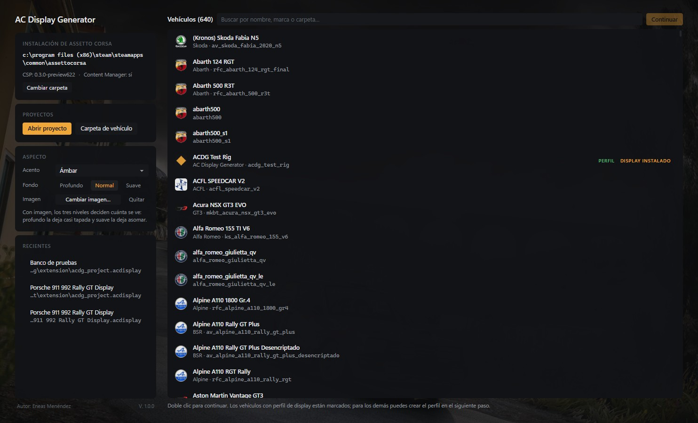
12345678
Instalación de Assetto Corsa. Carpeta detectada, versión de CSP y si tienes Content Manager. Cambiar carpeta si no es la correcta.
Proyectos.Abrir proyecto carga un .acdisplay; Carpeta de vehículo abre un coche que esté fuera de la instalación.
Aspecto. Color de acento, intensidad del fondo y una imagen de fondo opcional. Es solo estético.
Recientes. Los últimos proyectos; un clic y vuelves donde lo dejaste.
Buscador. Escribe parte del nombre, la marca o la carpeta del coche.
Marcas.perfil el coche ya tiene sus pantallas definidas; display instalado ya tiene una pantalla hecha con este programa.
Continuar. Abre el coche seleccionado (también con doble clic).
Autor y versión del programa.
Si el coche ya tiene un proyecto instalado con este programa, al abrirlo irás directamente al editor con tu diseño cargado.
5
El asistente: del coche al proyecto
Cuando abres un coche que todavía no tiene proyecto, un asistente de cuatro pasos prepara todo lo necesario. Arriba siempre ves en qué paso estás.
Paso 1 · Vehículo
El programa analiza la carpeta del coche y te enseña lo que encuentra: los datos (empaquetados o no), los modelos 3D (.kn5), las skins y si existe ext_config.ini en la carpeta extension. No tienes que hacer nada: revisa que es el coche correcto y pulsa Siguiente.
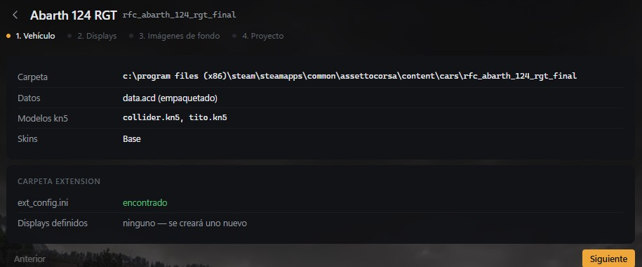
Paso 2 · Displays
Aquí se decide qué pantalla(s) vas a diseñar. Pueden darse tres casos:
El coche ya tiene un perfil: aparece en la lista y se marca solo. Pasa al siguiente paso.
El coche ya tiene pantallas de su autor (definidas en extension/): el programa las encuentra y puedes importarlas.
No hay nada: pulsa Crear perfil (modo creador) y elige la malla de la pantalla en el modelo 3D.
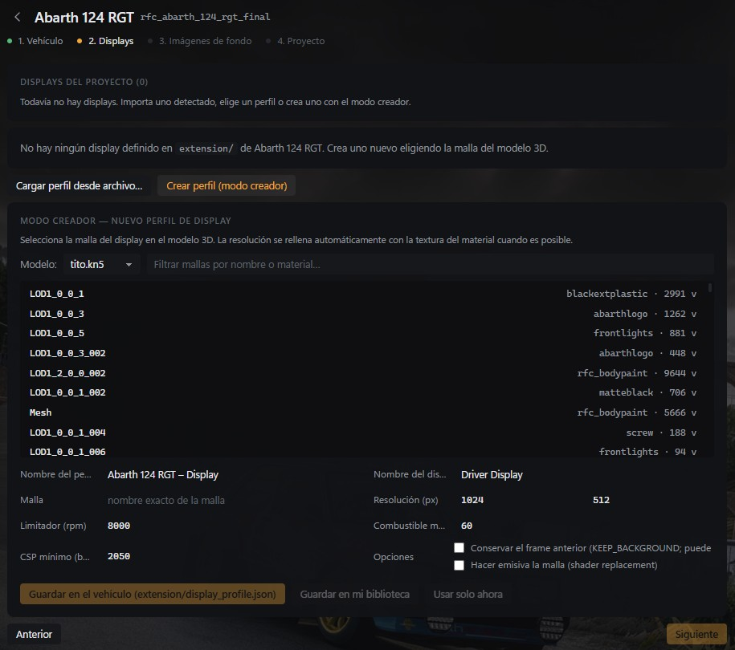
Modo creador: a la izquierda las mallas del modelo y a la derecha el material de cada una. Al pulsar una, se rellenan la malla y la resolución.
¿Cuál es la malla de la pantalla? Usa el filtro y prueba palabras como display, screen, lcd, dash o monitor, tanto en el nombre de la malla como en el del material. La pantalla suele ser una malla con pocos vértices (es un rectángulo). Si dudas, en el showroom de Content Manager puedes ver los nombres de las piezas.
Al terminar elige dónde guardar el perfil:
Guardar en el vehículo
Se escribe extension/display_profile.json en el coche. Lo recomendable: la próxima vez se detecta solo.
Guardar en mi biblioteca
Se guarda en los datos del programa, sin tocar el coche.
Usar solo ahora
Para probar: no se guarda en ningún sitio.
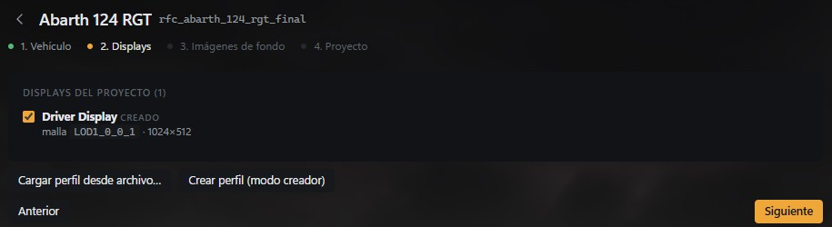
Con la pantalla elegida, aparece en «Displays del proyecto» y ya puedes seguir.
Paso 3 · Imágenes de fondo
Opcional. Puedes poner una imagen de fondo para cada pantalla (un diseño hecho en otro programa, por ejemplo). Lo ideal es que tenga la misma resolución que la pantalla; si no, se escala. Sin imagen, el fondo es un color liso. Se puede cambiar después.
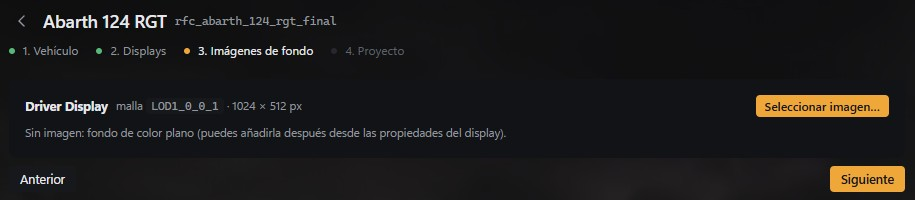
Paso 4 · Proyecto
Pon nombre al proyecto, revisa el resumen y pulsa Abrir editor. Si el coche tenía una pantalla original sobre la misma malla, aquí se avisa de que se desactivará al instalar (no se borra: se comenta en su .ini y se reactiva al desinstalar).
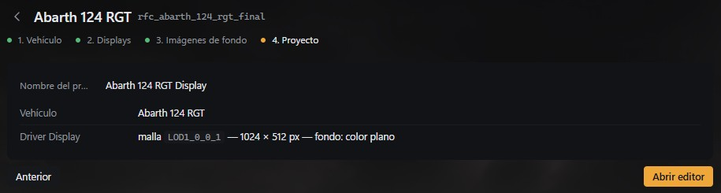
6
El editor
Aquí es donde se diseña. Todo está a la vista: a la izquierda lo que puedes añadir, en el centro el lienzo, a la derecha las propiedades de lo que tengas seleccionado y abajo la simulación.
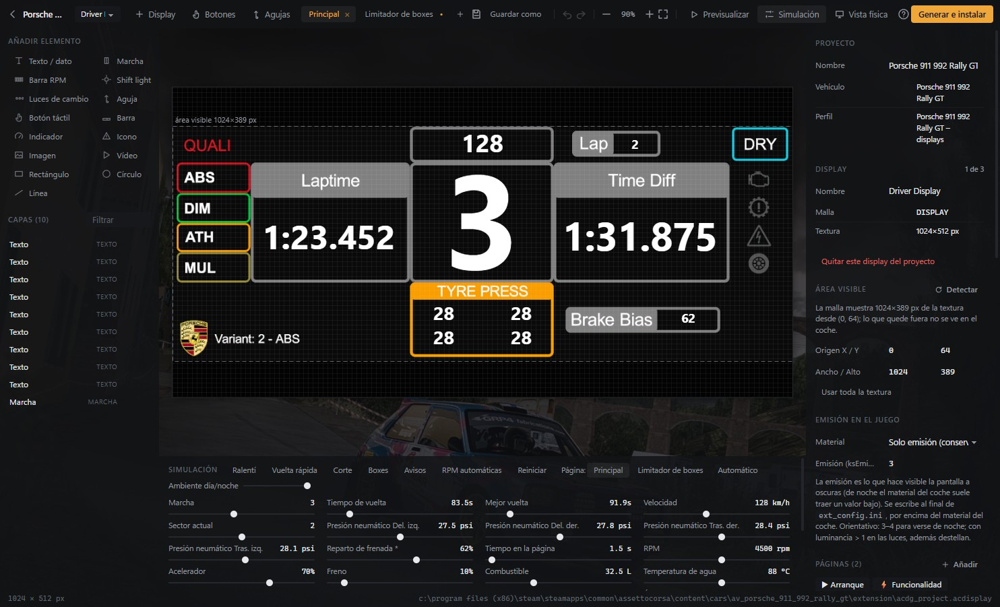
123456789101112
Volver al inicio y nombre del proyecto.
Display que estás editando (si hay varios), + Display para añadir otro, Botones y Agujas físicos (capítulo 11).
Páginas del display. Clic para cambiar de página, + para añadir una.
Guardar, guardar como, deshacer/rehacer y zoom.
Previsualizar (sin guías), mostrar/ocultar la Simulación y Vista física (la proporción real en el coche).
Generar e instalar: lleva tu diseño al coche (capítulo 13).
Añadir elemento: un clic y aparece en el lienzo.
Capas: lista de elementos de la página. Clic para seleccionar; el ojo oculta y el candado bloquea.
Lienzo: la pantalla a tamaño real. La línea discontinua marca el área visible.
Simulación: deslizadores para fingir datos del coche y ver cómo reacciona el diseño.
Propiedades del elemento seleccionado; sin selección, las del proyecto y el display.
Páginas del display: tipo, orden y cómo se cambia entre ellas (capítulo 9).
Trabajar con elementos
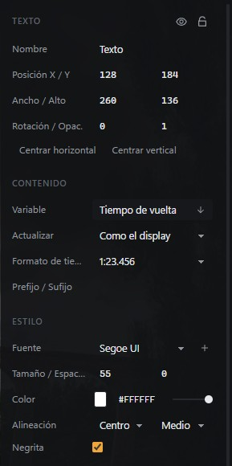
Propiedades de un texto que muestra el tiempo de vuelta.
Seleccionar: clic en el lienzo o en la lista de capas. Shift+clic para seleccionar varios.
Mover: arrastra, o usa las flechas (Shift para saltos de 10 px). Se ajusta solo a la rejilla y a otros elementos; mantén Alt para moverlo libremente.
Cambiar tamaño: arrastra los tiradores de las esquinas (Shift mantiene la proporción).
Deshacer: casi todo se puede deshacer con Ctrl+Z. Experimenta sin miedo.
7
Elementos y datos en vivo
Estos son los elementos que puedes añadir desde el panel izquierdo. Los que muestran datos se conectan a una variable del juego.
Elemento
Qué hace
Ejemplo de uso
Texto / dato
Un texto fijo o el valor de cualquier variable, con el formato que quieras.
Velocidad, tiempo de vuelta, «LAP»
Marcha
La marcha engranada, con R y N.
El número grande del centro
Barra RPM
Barra de revoluciones por segmentos o continua, con zonas normal, aviso, línea roja y limitador.
Tira de LEDs encima de la marcha
Shift light
Una única luz que se enciende o parpadea al llegar al régimen de cambio.
Testigo «SHIFT»
Luces de cambio
Fila de LEDs que se encienden progresivamente entre dos regímenes.
4 verdes, 3 ámbar, 3 rojos
Aguja
Una aguja dibujada en la pantalla que gira con un valor.
Cuentarrevoluciones digital
Botón táctil
Zona que se pulsa con el ratón dentro del coche (capítulo 10).
Cambiar de página, luces
Barra
Barra que se llena según un valor.
Combustible, acelerador, freno
Indicador
Arco o arco segmentado que se llena con un valor, con umbrales de color.
Temperatura de agua
Icono
Un icono integrado o tuyo que se enciende según un dato.
Testigo de ABS, TC, luces
Imagen
Una imagen del proyecto (PNG, JPG…).
Logotipo de la marca
Vídeo
Un vídeo que se reproduce al entrar en la página.
Animación de arranque
Rectángulo, Círculo, Línea
Formas para dar estructura al diseño.
Marcos, separadores, fondos
Las variables
Un elemento de datos se conecta a una variable desde Contenido → Variable. Hay más de 500, organizadas por categorías (coche, neumáticos, simulación y sesión): velocidad, rpm, marcha, combustible, temperaturas, presiones y temperaturas de neumáticos, tiempos y sectores, posición, ayudas (ABS, TC), reparto de frenada, luces, DRS, turbo, batería…
Unidades. Por defecto se usan las del coche. Puedes forzar métricas (km/h, °C, bar, L) o imperiales (mph, °F, psi, gal) en las propiedades del display.
Formato. Para cada dato eliges decimales, ceros a la izquierda, prefijo y sufijo (por ejemplo « km/h»), y para los tiempos el formato 1:23.456.
8
Reglas: que la pantalla reaccione
Una regla cambia el aspecto de un elemento cuando se cumple una condición. Es lo que permite avisos como «combustible bajo» o un número que se pone rojo al llegar al corte.
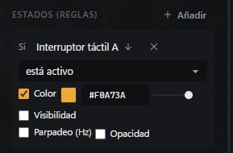
Regla real: si el interruptor táctil A está activo, el texto se pone ámbar.
Cómo crear una regla
Selecciona el elemento.
En Estados (reglas), pulsa + Añadir.
Elige la variable, la comparación y el valor (para las rpm puedes usar porcentajes del limitador, como 95 %).
Marca qué cambia: color, visibilidad, parpadeo u opacidad.
Mueve el deslizador de esa variable en Simulación para comprobarlo.
Ideas habituales
Quiero…
Regla
Que la marcha se ponga roja en el corte
Si RPM ≥ 95 % → color rojo
Un aviso de combustible que solo aparezca al final
Elemento oculto; si Combustible < 5 → visible y parpadeo
Un testigo que se encienda con el limitador de boxes
Si Limitador de boxes es verdadero → color ámbar
Que algo se vea solo con las luces encendidas
Si Luces es verdadero → visible
9
Páginas
Un display puede tener varias páginas, como un móvil con varias pantallas: una para la carrera, otra con los neumáticos, otra para boxes… Solo se ve una a la vez.
Tipo de página
Cuándo se ve
Datos (normal)
Las páginas de siempre. Se pasa de una a otra con el botón que elijas en Cambiar con (Extra A a H de CSP, que puedes asignar a un botón del volante) o con un botón táctil. Puedes añadirle condiciones para que aparezca sola: Mostrar automáticamente si…
▶ Arranque
Una secuencia que se muestra unos segundos al cargar el coche, como el logotipo al encender un coche real. Se puede repetir o saltar con un botón.
⚡ Funcionalidad
Una pantalla especial que se activa con un botón (KERS, Extra…), por ejemplo un launch control. Puede verse mientras mantienes el botón, entrar y salir con dos pulsaciones, o entrar con el botón y salir sola cuando se cumple una condición.
Dónde se configura. Sin ningún elemento seleccionado, el panel derecho muestra el grupo Páginas: ahí añades, ordenas, cambias el tipo y eliges el botón para cambiar de página. Con Plantilla… añades páginas ya hechas (launch control, limitador de boxes, ajustes del coche, combustible y menú táctil) que luego modificas a tu gusto: son un buen punto de partida.
Brillo de noche. En el grupo Brillo puedes bajar la intensidad del contenido con las luces encendidas o por la noche, para que la pantalla no deslumbre.
10
Pantallas táctiles
Con los botones táctiles la pantalla se puede «tocar»: dentro del coche, haces clic con el ratón sobre la pantalla y el botón actúa, igual que en un coche moderno con pantalla táctil.
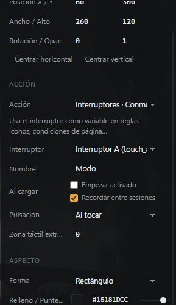
Propiedades de un botón táctil: acción, interruptor, pulsación y aspecto.
Crear un botón
Añade Botón táctil y colócalo donde quieras.
En Acción, elige qué hace.
En Pulsación, elige si actúa al tocar, mientras se mantiene o repite al mantener.
En Aspecto, ajusta forma, colores (normal, puntero encima, pulsado y activo), texto o imagen.
Qué puede hacer un botón
Páginas
Siguiente, anterior, primera, ir a una concreta, volver, repetir el arranque.
Interruptores
Conmutar, activar o desactivar un interruptor táctil (ver abajo).
Control de tracción, ABS, reparto de frenada y freno motor (+ y −).
ERS / DRS
KERS, DRS y los modos de MGU-K y MGU-H.
Coche
Punto muerto, cambio automático e interruptores Extra A a D.
Interruptores táctiles
Un interruptor táctil es un «sí/no» que guarda la pantalla (hay seis: A a F). Un botón lo enciende o lo apaga y luego lo usas en reglas, iconos o condiciones de página. Por ejemplo: un botón MODO que, al pulsarlo, pone en ámbar un texto y cambia su leyenda.
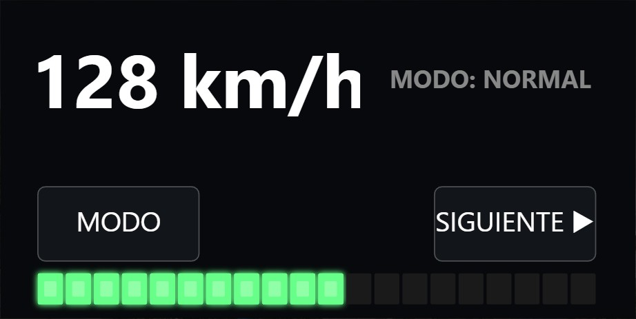
Interruptor A apagado.
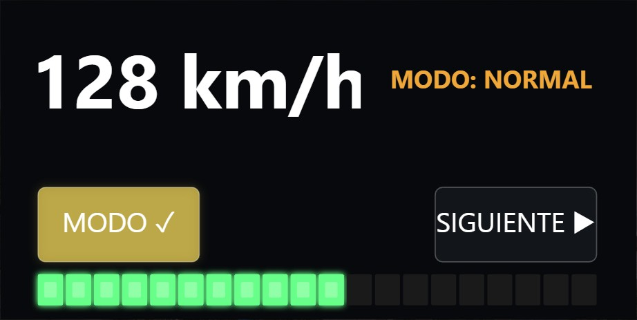
Tras pulsar MODO: el botón se ilumina y el texto se pone ámbar gracias a una regla.
Pruébalo en el editor: con Previsualizar activo, puedes hacer clic en los botones del lienzo y ver cómo cambian páginas e interruptores. Las acciones del coche (luces, ABS…) solo ocurren en el juego.
Otras opciones. En las propiedades del display, el grupo táctil permite activar el resalte al pasar el puntero y deslizar para cambiar de página, y poner nombre a cada interruptor y elegir si recuerda su estado entre sesiones.
11
Botones y agujas físicos
Además de lo que se dibuja en la pantalla, el programa puede dar vida a piezas reales del modelo 3D: pulsadores del salpicadero que se aprietan con el ratón y agujas de relojes analógicos.
Botones físicos
Se abren con Botones en la barra superior. Un botón físico es una malla del coche (un pulsador, una tecla de la botonera…) que, al hacer clic sobre ella dentro del coche, ejecuta una de las mismas acciones que un botón táctil.
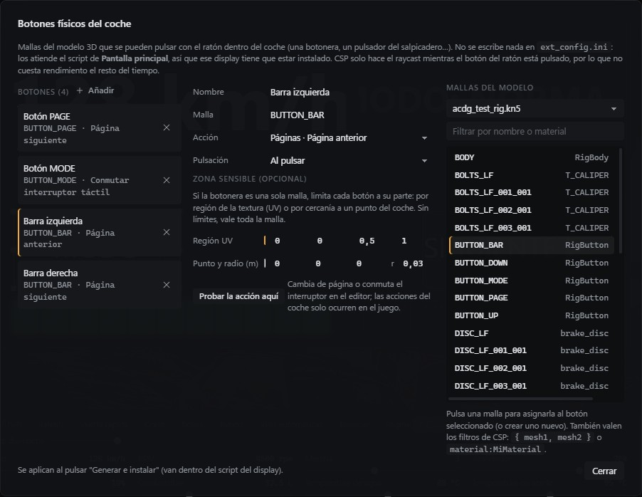
A la izquierda, los botones configurados; en el centro, los ajustes del seleccionado; a la derecha, las mallas del modelo. Pulsa una malla para asignarla.
Una sola pieza con varios botones
A veces toda la botonera es una única malla. En ese caso, limita cada botón a su parte con la Región UV (la zona de la textura donde está dibujado el botón) o con un punto y radio en el coche.
Con Probar la acción aquí compruebas en el editor que la acción hace lo que esperas.
Importante: los botones físicos van dentro del script de un display, así que ese display tiene que estar instalado para que funcionen.
Agujas físicas
Se abren con Agujas en la barra superior. Sirven para los relojes analógicos de verdad del salpicadero (no los dibujados en la pantalla). No dependen de ningún display.
El recorrido indica qué ángulo corresponde a cada valor.
Pulsa + Añadir y elige en Nodos del modelo el objeto de la aguja (suele llamarse NEEDLE_… o ARROW_…).
En Entrada, el dato que la mueve: rpm, velocidad, turbo, combustible…
En Recorrido, indica pares valor → ángulo. Con dos puntos el giro es lineal; añade más para escalas no lineales.
Ajusta el retardo para que se mueva con suavidad, como una aguja real.
¿Gira al revés? Cambia el signo de los ángulos (−120 ↔ 120). El ángulo se mide desde la posición en la que la aguja está modelada.
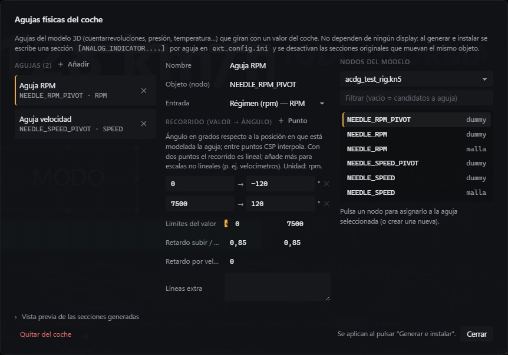
Diálogo de agujas físicas con la aguja de rpm seleccionada.
12
Probar antes de instalar
No hace falta abrir el juego cada vez. El editor imita el coche para que veas cómo se comporta el diseño.
Herramienta
Para qué sirve
Simulación
El panel de abajo tiene un deslizador para cada dato que usa tu diseño (velocidad, rpm, marcha, combustible…). Muévelos para ver cómo reaccionan los elementos y las reglas. Los botones de arriba simulan situaciones completas: Ralentí, Vuelta rápida, Corte, Boxes, Avisos y RPM automáticas. Reiniciar lo deja todo como al principio.
Ambiente día/noche
Oscurece el lienzo para ver cómo luce el diseño de noche.
Página
Elige qué página se muestra, o Automático para que se comporte como en el juego (condiciones incluidas).
Previsualizar P
Oculta tiradores, guías y rejilla: ves la pantalla tal cual. Los botones táctiles responden al clic.
Vista física
Deforma el lienzo a la proporción real de la pantalla en el coche. Útil cuando la textura no tiene la misma forma que la pantalla.
Comprueba siempre el área visible. La línea discontinua del lienzo marca lo que se verá en el coche. Si el modelo solo usa una parte de la textura, pulsa Detectar en el grupo Área visible (propiedades del display) y el programa la leerá del modelo 3D.
13
Generar e instalar
Cuando el diseño te guste, pulsa Generar e instalar. El programa convierte tu diseño en los archivos que entiende CSP y los copia en la carpeta del coche.
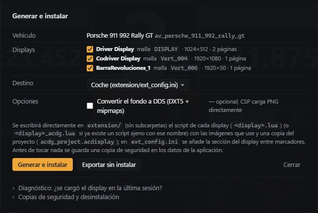
Marca qué displays quieres instalar.
Deja el destino en Coche (extension/ext_config.ini).
Opcional: convierte el fondo a DDS (CSP también carga PNG sin problema).
Pulsa Generar e instalar y revisa el informe: cada paso aparece como correcto o con su error.
Reinicia la sesión en el juego (o vuelve a cargar el coche): el juego solo lee estos archivos al cargar el coche.
Exportar sin instalar genera los mismos archivos en una carpeta aparte, sin tocar el coche (útil para compartir el trabajo o revisarlo).
Qué se escribe en el coche
El nombre del script es el del display. Si el coche ya tenía un script ajeno con ese nombre, el nuevo se llama …_acdg.lua para no pisarlo.
Deshacer y comprobar
Desinstalar
En el mismo diálogo, Copias de seguridad y desinstalación → Desinstalar el display. Quita lo que añadió el programa y reactiva la pantalla original del coche si la había.
Restaurar
Vuelve a dejar los archivos exactamente como estaban en una copia de seguridad.
Diagnóstico
¿Se cargó el display en la última sesión? lee el registro de CSP de tu última partida y te dice si el display se cargó o qué error dio. Muy útil si en el juego no ves nada.
14
Problemas frecuentes
Lo que pasa
Qué hacer
No veo nada en la pantalla del coche
Reinicia la sesión después de instalar. Usa Diagnóstico en el diálogo de instalación para ver si CSP cargó el display. Comprueba que la malla elegida es la pantalla y que tienes CSP actualizado.
El contenido sale desplazado o cortado
El modelo usa solo una parte de la textura. Pulsa Detectar en Área visible y coloca los elementos dentro de la línea discontinua.
El diseño sale estirado o aplastado
La textura no tiene la misma proporción que la pantalla física. Activa Vista física para diseñar con la forma real.
De noche o a la sombra no se ve
Revisa Emisión en el juego en las propiedades del display: elige Solo emisión y un valor de 3–4. Si aun así no luce, prueba Shader ksPerPixel + emisión.
De noche deslumbra
Usa el grupo Brillo para bajar la intensidad con las luces encendidas o por la noche.
Sigue apareciendo la pantalla original
Si el coche ya tenía su propia pantalla sobre la misma malla, el programa la desactiva al instalar. Si la original usa otra malla o la añades a mano, puede haber dos pantallas a la vez: desactívala o elige otra malla.
Un botón táctil no responde
Haz clic justo sobre la pantalla en la vista de cabina. Comprueba en Previsualizar que el botón está donde crees y que su acción es la correcta. Algunas acciones (luces, ráfaga…) son difíciles de notar desde dentro a plena luz del día.
Un botón físico no responde
El display al que pertenecen tiene que estar instalado. Si la botonera es una sola malla, revisa la región UV de cada botón.
Una aguja física gira al revés
Cambia el signo de los ángulos de su recorrido.
Quiero volver a como estaba
Desinstalar o Restaurar en el diálogo de instalación (capítulo 13).
15
Atajos de teclado
En el editor, pulsa F1 (o el botón ?) para verlos en cualquier momento.
Atajo
Acción
Arrastrar · Shift+clic
Mover · seleccionar varios
Tiradores + Shift
Redimensionar manteniendo la proporción
Alt al arrastrar
Mover sin ajustar a la rejilla
Flechas · Shift+Flechas
Mover 1 px · 10 px
Rueda · Espacio+arrastrar
Zoom · desplazar el lienzo
Ctrl+0 · Ctrl++ · Ctrl+−
Ajustar · acercar · alejar
Esc
Deseleccionar
Atajo
Acción
Ctrl+Z · Ctrl+Y
Deshacer · rehacer
Ctrl+C · Ctrl+V · Ctrl+D
Copiar · pegar · duplicar
Ctrl+A
Seleccionar todo
Supr
Eliminar
H · L
Ocultar · bloquear la selección
P
Modo previsualización
Ctrl+S · Ctrl+Shift+S
Guardar · guardar como
Resumen de bolsillo. Elige el coche → indica la pantalla → añade elementos y conéctalos a variables → añade reglas para los avisos → prueba con la simulación → Generar e instalar → reinicia la sesión en el juego. Si algo no va, el capítulo 14 y el Diagnóstico te dirán por qué.
AC Display Generator · V. 1.0.1 · Autor: Eneas Menéndez. Assetto Corsa, Custom Shaders Patch y Content Manager pertenecen a sus respectivos autores.